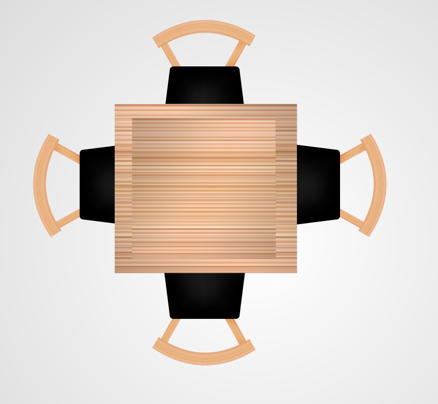

<mat-grid-list  [cols]="breakpoint" rowHeight="400px" (window:resize)="onResize($event)">
  <mat-grid-tile *ngFor="let table of tables">
    <mat-card class="example-card">
      <mat-card-header>
        <mat-card-title>Table Number: {{table.number}}</mat-card-title>
        <mat-card-subtitle>Capacity {{table.capacity}} people</mat-card-subtitle>
      </mat-card-header>
      <mat-card-content>
        
      </mat-card-content>
      <mat-card-actions>
        <mat-chip-list aria-label="Fish selection">
          <button (click)="createOrder(table)" mat-mini-fab color="accent" aria-label="Ordenar">
            <mat-icon>menu</mat-icon>
          </button>
          <mat-chip (click)="updateTableTakenState(table)" *ngIf="!table.isTaken" color="accent" selected>Free</mat-chip>
          <mat-chip (click)="updateTableTakenState(table)" *ngIf="table.isTaken" color="warn" selected>Not Aviable</mat-chip>
        </mat-chip-list>
      </mat-card-actions>
    </mat-card>
  </mat-grid-tile>
</mat-grid-list>
